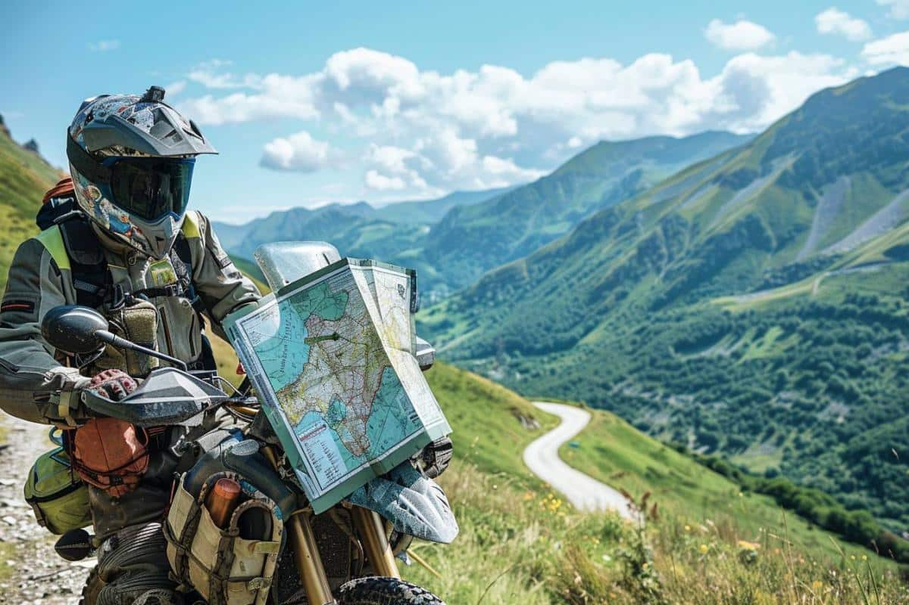
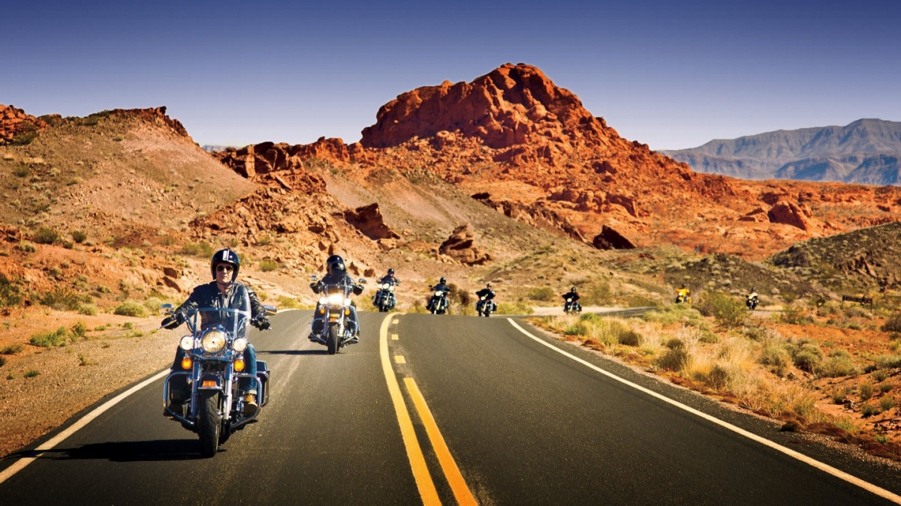
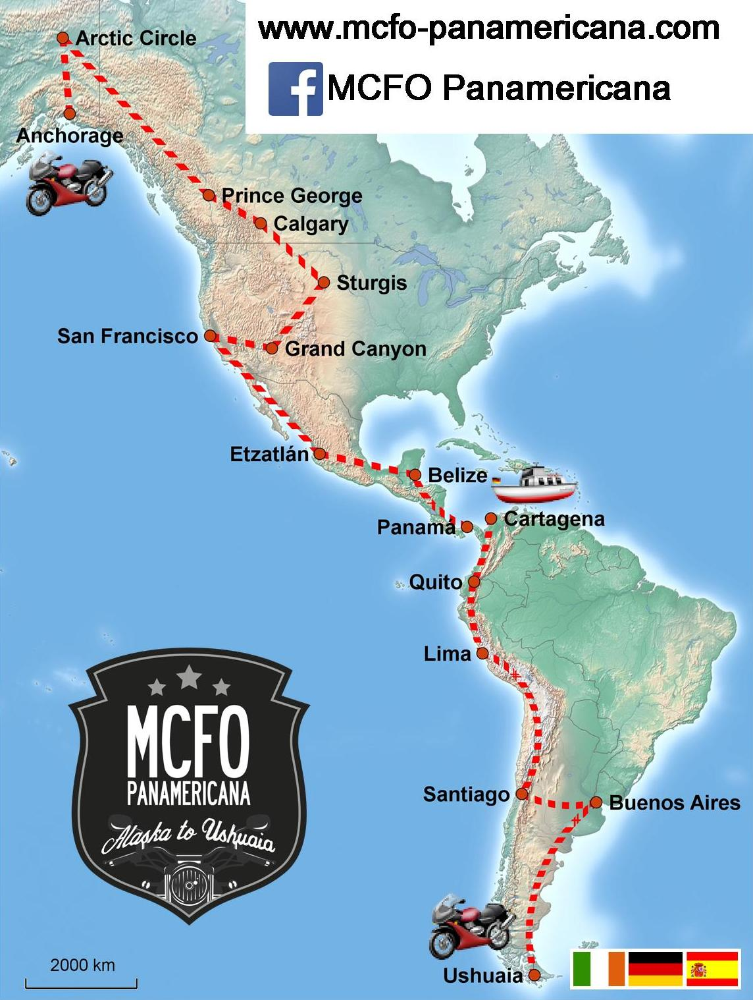
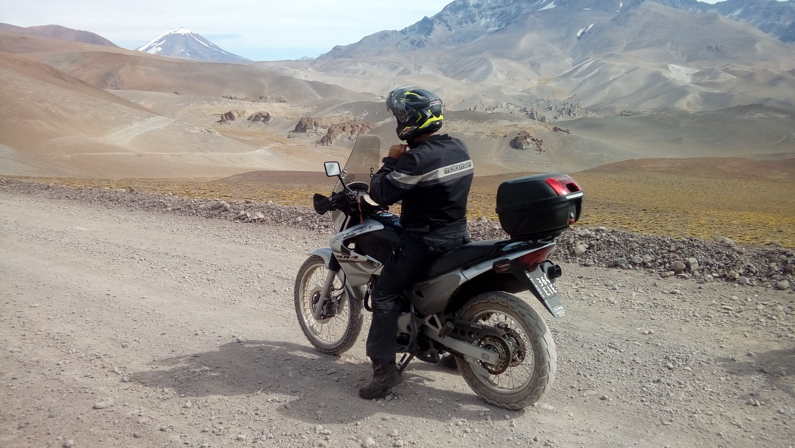
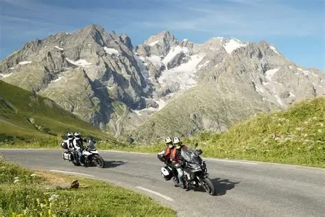
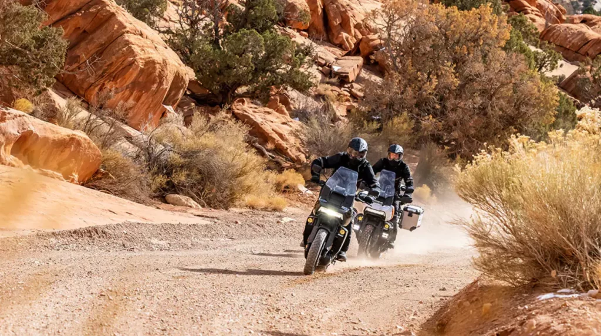

Introducción

Viajar en motocicleta es una de las experiencias más emocionantes que existen. Permite descubrir nuevos paisajes, conocer diferentes culturas y disfrutar de la libertad que solo una moto puede ofrecer.
Miles de motociclistas recorren cada año rutas legendarias alrededor del mundo, enfrentando desafíos y viviendo aventuras inolvidables.
Ruta 66 - Estados Unidos

La Ruta 66 es una de las carreteras más famosas del mundo. Fue inaugurada en 1926 y conecta Chicago con California.
Es conocida por sus paisajes desérticos, pueblos históricos, estaciones de servicio clásicas y una gran cultura motociclista.
Datos Principales
- País: Estados Unidos.
- Longitud: 3.940 km.
- Tipo de ruta: Turismo.
- Dificultad: Media.
Carretera Panamericana

La Carretera Panamericana es considerada la ruta terrestre más larga del mundo. Conecta América del Norte con América del Sur.
Los motociclistas atraviesan diversos climas, culturas y paisajes durante miles de kilómetros.
Características
- Atraviesa más de 10 países.
- Ideal para viajes de aventura.
- Presenta diferentes tipos de terreno.
- Es una experiencia inolvidable.
Ruta de los Andes

La Cordillera de los Andes ofrece algunas de las carreteras más espectaculares del planeta.
Sus rutas atraviesan montañas, volcanes, lagos y paisajes impresionantes que atraen a miles de motociclistas cada año.
Ventajas
- Paisajes únicos.
- Grandes desafíos para conductores.
- Experiencia cultural extraordinaria.
- Climas variados.
Alpes Europeos

Los Alpes Europeos son uno de los destinos favoritos de los motociclistas. Sus carreteras poseen curvas espectaculares y excelentes condiciones de conducción.
Miles de turistas visitan esta región cada año para disfrutar de sus vistas panorámicas.
Países Principales
- Suiza.
- Italia.
- Austria.
- Francia.
- Alemania.
Baja California

Baja California es uno de los lugares más famosos para los amantes de la aventura sobre motocicletas.
Combina playas, desiertos y caminos ideales para motocicletas de turismo y aventura.
Atractivos
- Paisajes desérticos.
- Playas impresionantes.
- Rutas off-road.
- Eventos motociclistas.
Equipamiento Recomendado
| Elemento | Importancia |
|---|---|
| Casco | Protección de la cabeza. |
| Chaqueta | Protección contra impactos. |
| Guantes | Mayor control. |
| Botas | Protección de pies y tobillos. |
| Impermeable | Protección contra lluvia. |
| GPS | Navegación. |
Consejos para Viajar en Moto
- Revisar la motocicleta antes de salir.
- Planificar la ruta.
- Utilizar equipo de protección.
- Respetar las normas de tránsito.
- Descansar regularmente.
- Hidratarse constantemente.
- Consultar el clima.
- Llevar documentación vigente.
Comparación de Rutas
| Ruta | Dificultad | Distancia |
|---|---|---|
| Ruta 66 | Media | 3.940 km |
| Panamericana | Alta | 30.000 km aprox. |
| Andes | Alta | Variable |
| Alpes | Media | Variable |
| Baja California | Media | 1.600 km aprox. |